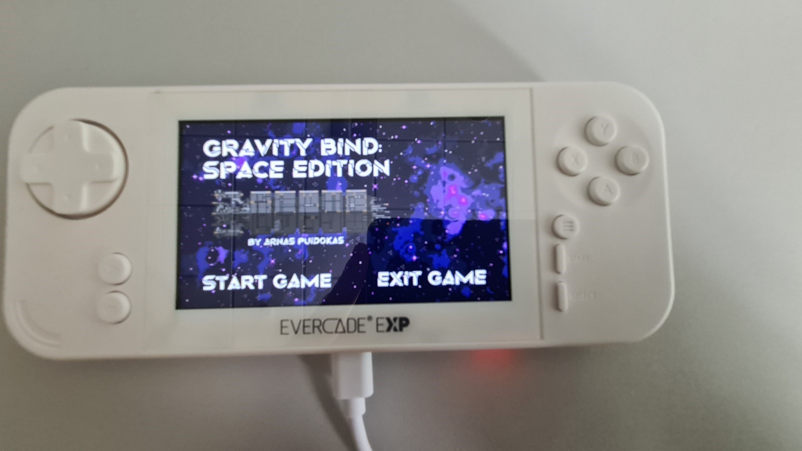

// Bespoke Platform Devlopment
by

During this project I created a game that was ported to the Evercade after following the proper procedure when creating a game. This included a research period, development period and porting period. It taught me how to investigate game design principles and project management, which without I wouldn’t have been able to create a fully fledge out game that was ported. Common struggles involved were porting to Evercade since it wasn’t as simple as pressing a couple of buttons and having worked on it so much throughout the period of the project, I devised my own method of step by step that always worked.
Production Pipeline
Developed a full game that followed a full production pipeline including research, development, and porting to Evercade.
Documentation
Created a custom porting cheat sheet to complete the Evercade porting process successfully each time.